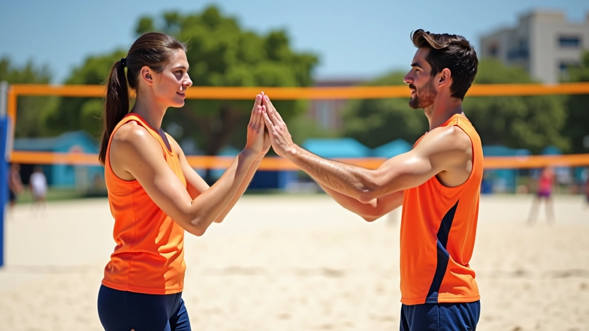

الإشارات الأساسية للمبتدئين
الإشارات الخمس الأساسية التي يحتاج كل لاعب جديد إلى تعلمها قبل الدخول إلى الملعب. بسيطة وسهلة التذكر.

لماذا الإشارات مهمة؟
في الكرة الطائرة الشاطئية، الصوت وحده ليس كافياً. الرياح القوية والضوضاء من اللاعبين الآخرين تجعل من الصعب التواصل بالكلمات. هنا تأتي أهمية الإشارات — وسيلة سريعة وواضحة للتنسيق بين الشريكين.
تعلم الإشارات الأساسية يعني أنك مستعد للعب الحقيقي. لا تحتاج إلى سنوات من التدريب — بل خمس إشارات بسيطة تغطي معظم حالات اللعب الشائعة.
ملاحظة مهمة
هذه الإشارات موجهة لأغراض تعليمية وإعلامية. الإشارات المستخدمة قد تختلف قليلاً حسب الفريق أو المدرب أو المنطقة الجغرافية. دائماً تابع تعليمات مدربك أولاً، وكن مستعداً لتعديل فهمك حسب احتياجات فريقك.
الإشارات الخمس الأساسية
هذه الإشارات تغطي معظم حالات اللعب. كل إشارة بسيطة وسهلة التمييز حتى من بعيد. تدرب على كل واحدة حتى تصبح طبيعية تماماً.
إشارة "أنا هنا"
رفع اليد بشكل مستقيم فوق الرأس. تعني أنك جاهز لاستقبال الكرة وموجود في الملعب. بسيطة لكنها ضرورية جداً في بداية اللعبة.
إشارة "الشبكة"
لمس الشبكة برفق بأصابعك أو اليد المفتوحة. تشير إلى أن الكرة ستذهب قريبة جداً من الشبكة. يساعدك الشريك على الاستعداد للدفاع السريع.
إشارة "عميقة"
تحريك يدك للخلف ببطء. تعني أن الكرة ستسقط بعيدة عن الشبكة. تحضر شريكك للتحرك للخلف بسرعة.
الإشارتان الإضافيتان
4. إشارة "أنت تأخذها"
الإشارة بإصبعك نحو شريكك. تعني بوضوح أنك تترك الكرة له. تساعد على تجنب الارتباك والتضارب في المسؤولية. في الكرة الطائرة الشاطئية، تعاون واضح = أداء أفضل.
5. إشارة "استعد للدفاع"
لمس صدرك أو بطنك بسرعة. تحذير سريع من أن الخصم سيضرب الكرة قريباً. يعطي شريكك نصف ثانية إضافية للاستعداد والتركيز. هذه الإشارة تنقذك من الكثير من النقاط الخاسرة.
كيف تتدرب على الإشارات
تعلم واحدة تلو الأخرى
لا تحاول تعلم الخمس معاً. خذ إشارة واحدة يومياً. مارسها مع شريكك حتى تصبح طبيعية. بعد أسبوع ستكون جاهزاً لكل شيء.
استخدمها في التدريب
لا تتعلم فقط — استخدم الإشارات فعلياً في كل تدريب. حتى لو كان الملعب هادئاً، استمر في الإشارات. هذا يبني العادة.
تواصل مع شريكك
اجلس مع شريكك بعد التدريب. تأكد أنكما تفهمان الإشارات بنفس الطريقة. اسأل عن أي تفاصيل غير واضحة.

نصائح مهمة للمبتدئين
الوضوح أولاً
تأكد أن شريكك يراك. لا معنى للإشارة إذا لم يراها. قبل كل إشارة، تحقق من أن انتباهه عليك.
السرعة مهمة
الإشارة يجب أن تكون سريعة وواضحة. الكرة تتحرك بسرعة — لا وقت للإشارات البطيئة. أسبوع تدريب وستصبح طبيعية.
التناسق مع الشريك
تحدث مع شريكك قبل اللعبة. تأكد أنكما تستخدمان نفس الإشارات. بعض الفرق لها طريقتها الخاصة.
التطور المستمر
هذه الخمس إشارات مجرد البداية. كلما لعبت أكثر، ستتعلم إشارات إضافية. لا تتوقف عن التعلم.
الخطوة التالية
الآن أنت تعرف الإشارات الأساسية. الخطوة التالية؟ اخرج للملعب وابدأ التدريب. لا تنتظر حتى تصبح مثالياً — تعلم من خلال اللعب.
تذكر أن كل لاعب محترف بدأ من هنا. الإشارات البسيطة هي أساس اللعبة الجيدة. مارسها بانتظام، وستندهش من كيف تحسن لعبتك.

فريق إشارات الشاطئ التحريري
فريق تحريري
كتبه فريق إشارات الشاطئ التحريري، متخصص في تقديم إرشادات عملية وسهلة المتابعة.
مقالات ذات صلة

إشارات الدفاع والحماية
كيفية استخدام الإشارات للتنسيق بين الدفاعين. تعلم كيف تغطي مناطقك وتحمي شريكك من...

الإشارات المتقدمة والخطط
إشارات معقدة تستخدمها الفرق المتقدمة للتنسيق بين الهجوم والدفاع. تتضمن تغييرات ت...

الممارسة والتطبيق العملي
تمارين عملية لتطوير سرعة استجابتك للإشارات. تدريبات فريقية تساعدك على التعود على...